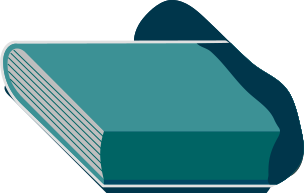

以成長為名的自定義論壇——複雜生活節
複雜生活節由一群有以下特質的人們組成：連續工作狂、反覆實踐、自稱系邊...。也是在 40 天之內籌備、達 250 人參加，一場屬於八年級生的聚會。複雜生活節相信，論壇除了討論「成功」之外有更多的可能，於是逐漸發展出了以「成長」為名、說做就做的祭典。身兼中醫師的皓甯，也是複雜生活節的總召，對學生社團活動有著近乎痴迷的狂熱。他善用身邊累積的許多厲害美宣、行政庶務人才等資源，和自己賭了一把。希望透過活動找到一起成長的人，在探索的過程中得到更多反饋。
點擊不同的軌跡查看行動夥伴的故事！
行動軌跡 - Action 1
皓甯因為讀了七年的醫學院，社團經歷豐富，他相信學生社團可以很厲害，但同時也看見學生社團最大的問題：「原地踏步，每年回去看學弟妹問題都是一樣的」。因此他想，如果能辦一個給全臺學生社團活動的金馬獎，把最厲害的社團人聚集在一起，頒發年度最佳原創活動、最佳美宣製作......，那麼一切就有被累積、往前進步的可能，這些人也有機會認識到自己的價值。
不過，社團金馬獎的概念規模太大，短時間內做不到，那複雜生活節呢？一樣都是把這些很有想法與執行力的人聚集起來、互相認識、深度交流啊！所以何不在臺中試辦一場，做為一個起始點呢？
行動軌跡 - Action 2
如果聽過簡單生活節，「複雜生活節」這五個字對你來說應該不難記住。皓甯說，這其實有一部份是要向簡單生活節致敬。因為他很喜歡簡單生活節能在論壇中隨意亂竄的設計。而之所以為複雜，是因為現下的年輕人在還有許多事物要追尋的情況下，無法放鬆心情去簡單，那何不認真來複雜呢？
在 2016 年第一屆辦完之後，除了名字外，複雜生活節之所以能引起其他人的關注，很大一部份原因是它太特別了！以致於連參與者都不知道該如何敘述「這到底是什麼活動」。漸漸營造出了一種「不知道是什麼，但好像很厲害耶」的形象。
行動軌跡 - Action 3
在舉辦過兩屆複雜生活節之後，皓甯也開始思考未來的輪廓。而他所找到的持續創造影響力的作法，就是連續辦十年的複雜生活節。每一年都把人找來，不論是慕名而來的、曾經參加過的，都讓這些人在這裡互相碰撞、都將這些人帶來的內容記錄下來。他期望的是，十年過去之後，辦或不辦已經沒有太大的差別，因為到了那個時候，複雜生活節所代表的精神與文化已經永遠留在這片土地上。
2016.01.29 我的原則是，xxx辦爆
在肯德基閒聊垃圾梗，覺得把一大堆莫名其妙活動規模辦好辦爆的團隊聚在一起，一定很棒
2016.04.12 升起火焰，一直燒到黎明
決定啟動複雜生活節，基礎行政之後，是輾轉反側借場地
2016.04月底 找複雜？帶風向
雙策展人發文，捕捉各地團隊意見領袖，同溫層內人氣開始聚集
2017.05.14 空白開賣，售票起點
做了空空蕩蕩的 KKTIX 售票頁面，活動前兩周開始正式售票
2017.05.21 混沌熱潮，規模上升
票賣完了，決定加碼梭哈，找尋更多團隊，提高售票張數
2017.05.28 活動開始，深夜草原
兵荒馬亂的前置，深夜草原大酒吧，後續時光的無限交流，都由此刻緩緩展開
Q：你做複雜生活節的時候已經脫離學生身份了，而且有中醫師的工作，為什麼會想辦一個活動給學生呢？
A：
我從小就對大學社團活動有憧憬，而在畢業後又有中醫師的工作能保障經濟來源，所以更能全力以赴投入學生活動。但也因為這樣，我發現學生社團很容易原地踏步。每年聽學弟妹的問題幾乎是一樣的，更妙的是，搞不好隔壁社團的問題也是一樣的。即便有網路和社群媒體，但資訊就是無法互通，導致想學的人找不到人教、或是厲害的人不知道自己很強，大家都卡在原地。
一開始我想了一個類似學生社團活動金馬獎的概念，光是唸出「最佳原創活動設計，入圍的有.....」對這個專案的所有參與者、甚至於家長，都有很重要的意義。而當全國某領域最強的 5 個學生互相認識，我相信他們就有可能帶大家往前走。但這是理想，不是一步就能辦出來的活動，而複雜生活節的精神跟這個是一致的。所以當聊到的時候，評估一下可行我們就去做了。
Q：為什麼你會認為學生社團其實可以很強、很厲害？
A：
你們知道台灣每年都會有國際會展獎嗎？依照會展的參與國家數量與規模分成甲組和乙組。我們去領獎的那年，除了 AIESEC 和我們的台灣醫學生聯合會是學生團體之外，其他都是會展公司。但是甲組的金質獎是AIESEC，銀質獎就是我們，上台領獎那刻我真的超級地感動。我們和年紀約 30, 40 歲的經理同桌吃飯時，還被誤認為是志工。當他們知道我們是來領獎的、而且是國家數量近百的團隊之後，整個餐桌頓時沈默了下來XD
從那時候開始，我覺得年輕人真的超強！超強！
Q：當你覺得可以做 (複雜生活節)的時候，有團隊了嗎？
A：
嚴格來講我有三位夥伴。而且主要也是因為信任這些人的能力，讓我覺得我可以賭一把試試看。
一是豆泥 (另一位總召)，他能夠支援所有設計的事情，他帶的人有很強的美編能力、產出速度很快；然後另一個是我女朋友，她的行政能力很強，所有落地執行的事務像是講師接洽、報名收費、採買等，我就會交給她。最後就是我自己，負責比較多行銷宣傳和課程安排、活動設計等。
Q：你在辦完第一屆之後，有沒有發現一些錯誤是你希望在之後可以避免的？
A：
有一件事情是傷害我比較深的，就是我後來有聽到工作人員私下反應說工作量太大，身體與情緒勞動嚴重。以教室控制者為例，他們要處理很多第一線的事情，所以其實無法跟任何人交流。交流是複雜生活節很重要的核心精神，然而，工作人員反而變成是收穫最少的人。另外，幫忙做設計的夥伴，平常他們都喜歡做做圖，但在會後一整個禮拜他們只要看到圖就覺得心很累。所以在第二屆時，我就給自己下一條新規定，就是我要工作人員辦完活動之後是開心的，也比較注意這塊，情況就好很多。
用 6000 元把想法變行動
>第一步行動：
找美宣製圖，跟幾個有興趣的早期參加者事先聯絡，讓大家自由 tag 想聽的講者 (每人最多一個)，一旦我們邀約成功，就會公告哪位講師邀約成功，以及公布得獎者。
>預算分配：
金額 項目 說明
6000 公關 抽獎用
>為什麼這樣分配：
由於複雜生活節是售票活動，在活動初期，需要高度曝光，以及打造理想論壇清單。因此，讓受眾在這篇贈票文下面，tag 想聽的講者。若我們覺得很棒，也成功邀約，屆時講者演講結束時，會讓得獎者和他合照，同時退 500 元。

中醫師來辦學生活動？

學生社團超級強？

剛起步時的團隊狀況

從錯誤中的學習

用 6000 元把想法變行動


A：老皮，我的願望就是成為一隻萬用魔法狗！
A：很簡單很簡單，只要想著自己也許明天就會死去的話，其實很多東西會變得極為單純
點擊包包！
A：把白天別人寄來的信回完
A：遊戲化實戰全書
A：高鐵站、高鐵上、旅館裡